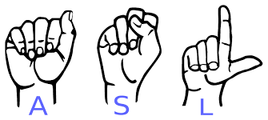

Deep Learning Projects
Relevant CourseworkCS 6746: Computer Vision
CSE 6740: Computational Data Analysis (ML)
CSE 8803: Data Science in Social Networks
CS 7650: Natural Language Processing2024 @GT Hacklytics PalmVerse: AI Sign Language Video-to-Text & Audio
Bridged mutism communication gap with computer vision and deep learning. Developed an AI tool that converts video livestream to textual and audio output.
Used OpenCV and ffmpeg algorithms to track hand landhand sign landmarks in real-time. Then developed a CNN based attention mechanism model with TensorFlow to recognize hand sign alphabets at 90% accuracy.2023 Personalized Chatbot: Efficient Finetuning & RAG
Finetuned Huggingface GPT-neo-x model with 20B parameters with QLoRA, reducing trainable parameters to 0.08% in Colab environment to enable faster training.
Deployed RAG with cosine-similarity retrieval to enable output optimization and reduce hallucination.2023 BoCoEl: LLM Efficient Evaluation tool with Bayesian Optimization
Applies Bayesian optimization to workwith expensive-to-evaluate LLMs. Bocoel uses Bayesian optimization as a backbone for exploring the embedding space given by our corpus, which allows it to select a good subset acting as a mini snapshot of the corpus.
Bocoel works in the following steps:
1) Encode individual entry into embeddings (cheaper & faster than LLM and reusable).
2) Use Bayesian optimization to select queries to evaluate.
3) Use the queries to retrieve from our corpus (with the encoded embeddings).
4) The evaluations generated are easily managed by the provided manager utility.
To our knowledge, this is the first work aiming to reduce computation costs during evaluation (benchmarking) with a (possibly dynamic) budget.2023 GNN Amazon Customer Disatisfaction Prediction
Developed a BERT embedded tripartite Graph Convolutional Network (GCN) to accurately predicted Amazon customer dissatisfaction score . By leveraging GCN on tripartite graph using BERT embeddings of 30+gb amazon user-product-eview text dataset as nodes in PyTorch, reached at near-perfect 0.98 R2 regression score.
During training, boosted accuracy over 7% by applying multitask learning on human-annotated review helpfulness and sentiment labels to beat multimodal (BERT+CLIP) baseline by significant margins.
- © CheTing Meng
- Design: HTML5 UP
- Graphics Source: Google